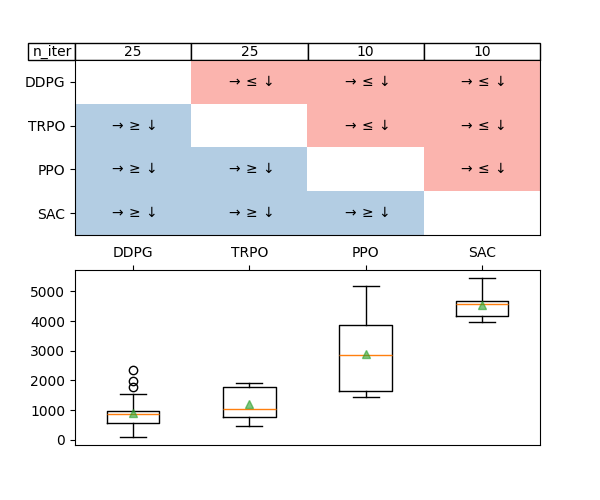

Tutorial#
There are two ways to use AdaStop:
Command line interface: AdaStop can be used as a command line interface that takes csv files as input. The cli interface can either be called interactively or the process can be automated using bash script.
Python API: AdaStop is coded in python and can directly be imported as a module to be used in a python script.
In this tutorial we show how to use the CLI as it seem more convenient and more adapted to the majority of users.
Case study: Comparison of Reinforcement Learning algorithms#
The command line interface takes csv files as input. Each csv file must contain a dataframe with \(n\) rows and as many columns as there are algorithms. Each of the \(n\) rows corresponds to one run of an algorithm. Please note that if, in the process of the algorithm, all the comparisons for one of the algorithm are decided, then this algorithm does not need to be run anymore and the number of columns in the next csv file would decrease.
Below, we give an example based on files containing the evaluations of PPO,DDPG,SAC,TRPO, four Deep Reinforcement Learning algorithmes, given in the `examples` directory of the main repository.
Installation#
To install adastop, use pip:
pip install adastop
This will automatically install the command line interface as well as the python library.
Help for cli tool#
The AdaStop algorithm is initialized with the first test done through `adastop compare` and the current state of AdaStop is then saved in a pickle file. The help of `adastop` command line can be obtained with the following:
adastop --help
Usage: adastop [OPTIONS] COMMAND [ARGS]...
Program to perform adaptive stopping algorithm using csv file intput_file.
Use adastop sub-command --help to have help for a specific sub-command
Options:
--help Show this message and exit.
Commands:
compare Perform one step of adaptive stopping algorithm using csv file...
plot Plot results of the comparator situated in the folder 'folder'.
reset Reset the comparator to zero by removing the save file of the...
status Print the status of the comparator located in the folder...
AdaStop CLI contains sub-commands whose help can be obtaine using `adastop sub-command –help. For example, to obtain the help of the compare sub-command, type the following.
adastop compare --help
Usage: adastop compare [OPTIONS] INPUT_FILE
Perform one step of adaptive stopping algorithm using csv file intput_file.
The csv file must be of size `size_group`. At first call, the comparator
will be initialized with the arguments passed and then it will be saved to a
save file in `.adastop_comparator.pkl`.
Options:
-K, --n-groups INTEGER Number of groups. [default: 5]
-N, --size-group INTEGER Number of groups. [default: 5]
-B, --n-permutations INTEGER Number of random permutations. [default:
10000]
--alpha FLOAT Type I error. [default: 0.05]
--seed INTEGER Random seed.
--compare-to-first Compare all algorithms to the first algorithm.
--help Show this message and exit.
Download and first look at the example data.#
Let us download the first batch of data and print it
curl -s -C - https://raw.githubusercontent.com/TimotheeMathieu/adastop/main/examples/walker1.csv > walker1.csv
cat walker1.csv # file contains evaluations on walker environment
,PPO,DDPG,SAC,TRPO
0,3683.49072265625,420.27471923828125,4291.02978515625,446.09295654296875
1,1576.483154296875,640.0671997070312,4551.0380859375,1918.919677734375
2,3908.14013671875,2338.0419921875,4669.77490234375,1015.7262573242188
3,1451.9110107421875,879.0955200195312,4697.365234375,757.0098876953125
4,5177.005859375,736.5420532226562,4074.497802734375,1769.3448486328125
The input format of adastop is under the form of a csv file containing the scores for one batch of experiment. AdaStop is a sequential algorithm and as such we do not give it all the data at once, we obtain first a batch of data, launch AdaStop and then if AdaStop is still undecided on some of the algorithms, we get another batch of data.
Doing a comparison using AdaStop#
Let us launch AdaStop on this first batch of data.
First, we clean up the current directory of any litter files that could have been spawned by a previous usage of `adastop` (if you never used `adastop` before, this command will not have any effect).
adastop reset . # reset the state of the comparator (remove hidden pickle file)
Comparator file have been removed.
Then, we do the comparison. Due to the cost of running this task, we use small batch of data (`–size-group` is 5, which corresponds to 5 scores per batch) and we limit ourselves to a maximum of \(25\) samples (i.e. we use 5 groups). By default the test will run with \(\alpha\) the family-wise error of the test set to \(0.05\%\).
adastop compare --n-groups 5 --size-group 5 walker1.csv
Still undecided about DDPG PPO SAC TRPO
Comparator Saved
After this first step, it is still undecided what is the ranking of DDPG and TRPO (e.g. the “continue” decisions). We have to generate new runs for all the algorithms in order to have more information and be able to rank these algorithms. Once these runs are generated, we continue the process.
curl -s -C - https://raw.githubusercontent.com/TimotheeMathieu/adastop/main/examples/walker2.csv > walker2.csv
adastop compare --n-groups 5 --size-group 5 walker2.csv
Still undecided about DDPG TRPO
Comparator Saved
curl -s -C - https://raw.githubusercontent.com/TimotheeMathieu/adastop/main/examples/walker3.csv > walker3.csv
adastop compare --n-groups 5 --size-group 5 walker3.csv
Still undecided about DDPG TRPO
Comparator Saved
curl -s -C - https://raw.githubusercontent.com/TimotheeMathieu/adastop/main/examples/walker4.csv > walker4.csv
adastop compare --n-groups 5 --size-group 5 walker4.csv
Still undecided about DDPG TRPO
Comparator Saved
curl -s -C - https://raw.githubusercontent.com/TimotheeMathieu/adastop/main/examples/walker5.csv > walker5.csv
adastop compare --n-groups 5 --size-group 5 walker5.csv
Test is finished, decisions are
Agent1 vs Agent2 |
mean Agent1 |
mean Agent2 |
mean diff |
std Agent 1 |
std Agent 2 |
decisions |
|---|---|---|---|---|---|---|
PPO vs DDPG |
2901.53 |
884.119 |
2017.41 |
1257.93 |
535.74 |
larger |
PPO vs SAC |
2901.53 |
4543.4 |
-1641.87 |
1257.93 |
432.13 |
smaller |
PPO vs TRPO |
2901.53 |
1215.42 |
1686.11 |
1257.93 |
529.672 |
larger |
DDPG vs SAC |
884.119 |
4543.4 |
-3659.28 |
535.74 |
432.13 |
smaller |
DDPG vs TRPO |
884.119 |
1215.42 |
-331.297 |
535.74 |
529.672 |
smaller |
SAC vs TRPO |
4543.4 |
1215.42 |
3327.98 |
432.13 |
529.672 |
larger |
Comparator Saved
The process stops when all the comparisons are decided.
Analysis of AdaStop results – plot and status commands#
adastop plot . result.pdf

If one wants to reset AdaStop to redo the process, one can use `adastop reset .`.
Finally, we can use `adastop status` to get additional informations on how the test went in text format.
adastop status .
Number of scores used for each agent:
PPO:10
DDPG:25
SAC:10
TRPO:25
Mean of scores of each agent:
PPO:2901.527783203125
DDPG:884.1189752197265
SAC:4543.398095703125
TRPO:1215.4159606933595
Decision for each comparison:
PPO vs DDPG:larger
PPO vs SAC:smaller
PPO vs TRPO:larger
DDPG vs SAC:smaller
DDPG vs TRPO:smaller
SAC vs TRPO:larger